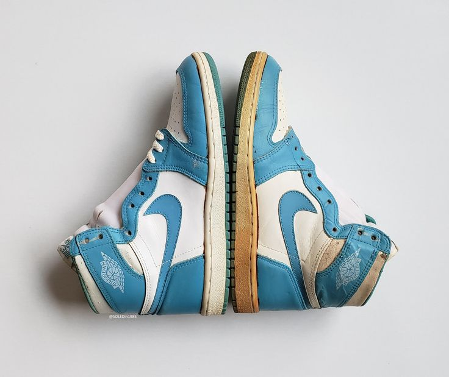

Welcome all this is the sneakerHub wash, restorations and customizations!
About
The sneakerHub is a sneaker laundry service for the everyday person. Your sneakers are washed to your specifications by well established sneaker technicians within a 48 - 72 hour turnaround time. We are meticlous about our work and tend to be very deligent. This is the reason we ask for the time we do to get your sneakers right.

Products
Wash

When your sneakers enter our laundry, we start by removing the innersoles, laces and any debris from the outersoles that being dirt gum and stones.
Restorations

Some materials start to lose their color over time. Whether it's suede, leather etc we will repaint and/or redye your sneakers to complete your sneaker dye restoration project.
Customizations

Tell your story through your snaekers, you're a story teller so why not let your kicks tell it for you. Give us your story so we can help you tell it, sneakers customized and styled to your wish with a touch of our uniqueness of course.
Services
Wash
After the process of removing the innersoles and laces, your shoes are gently scrubbed using some of the best products. With the use of the latest eraser sponges for scuffs and stains on the outersoles, a quick but thorough wipe of the remaining dirt and stuff with cloths that absorb inside moisture and maintain the shoes shape while it dries.
Restorations
Once we've gotten the chance to know your shoe we tend to do a sink scrub. We start the process of repainting/redying with care and caution by our professional steady artists hands. With the use of paints specifically made for leather, suedes and other materilas. We also treat your shoes as well as you treat yourself and thus leather condition them for you.
Customizations
With this line of our services we take your canvas and use paint with the use of your story and our unique hand painted
designs customize your sneakers, vinyl or trims. With a number of tests on a bunch of art supplies we have gained top know how
and have recommendations. You might think that the base color or color of the shoe is a problem, but woory not as we work our magic
on everything. Just like any painting job the right paint and primers are assembled based on what you wanted us to
Delivery and collections
We deliver and collect on call only in and around the soweto township. We do charge a little extra of course but can you really put a price on your prized gem?